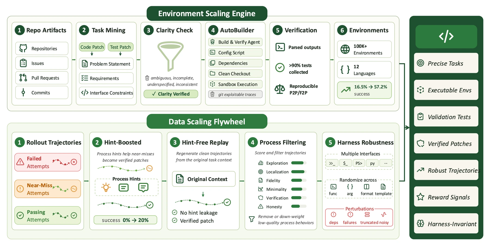
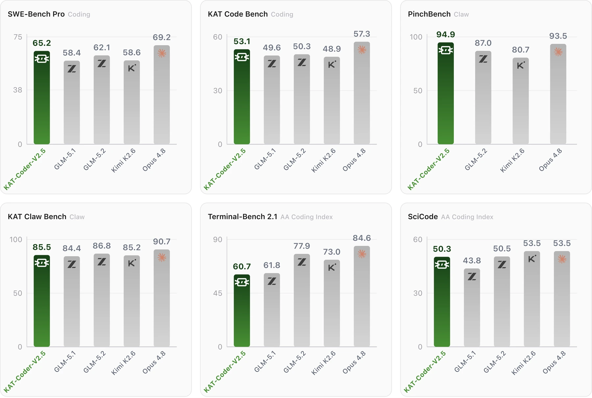
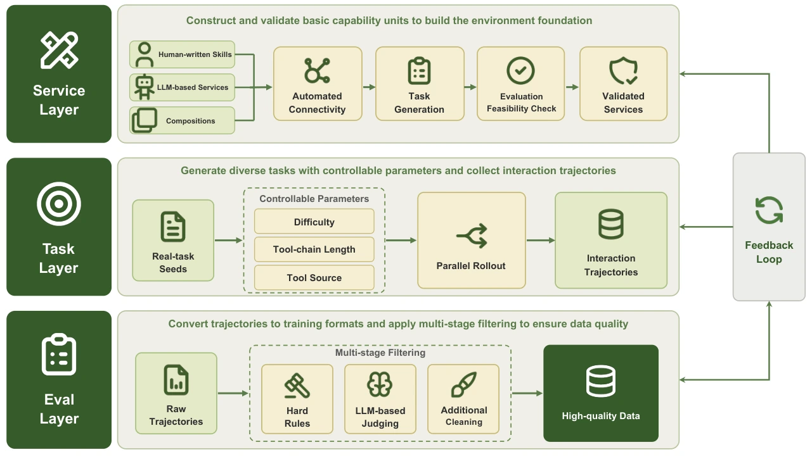

The bottleneck for agentic coding is not obviously parameters. A model can be large and still have nothing to learn from: repository tasks that cannot be reconstructed, rewards that cannot be verified, and trajectories too cheap to be worth training on.
智能体编程的瓶颈未必在参数。一个模型可以很大，却依然没有东西可学：仓库任务无法重建，奖励无法验证，轨迹又廉价到不值得训练。
That framing drives this report. KAT-Coder V2.5 is trained to act inside real, executable repositories rather than to emit a single-turn completion, and most of the engineering goes into making that training possible — environments, rewards and trajectory selection, not scale.
这份报告正是以这一点为前提展开的。KAT-Coder V2.5 被训练成在真实可执行的仓库中行动，而不是输出一个单轮补全；绝大部分工程投入用于让这种训练成为可能——环境、奖励与轨迹筛选，而不是规模。
The outcome is deliberately uneven: the best agentic tool-use result on PinchBench, second only to the frontier Opus 4.8 on repository-level software engineering, and a clear deficit on terminal tasks. Reading that profile is more useful than reading a rank.
因此结果刻意是不均衡的：在 PinchBench 上取得最佳的智能体工具使用结果，在仓库级软件工程上仅次于前沿的 Opus 4.8，而在终端任务上存在明显短板。读这份剖面比读一个排名更有用。
AutoBuilder reconstructs multilingual repositories into sandboxes with fail-to-pass and pass-to-pass verification at scale, then regenerates self-contained task specs and recovers near-miss trajectories — the environment, not model size, is treated as the scarce resource.
AutoBuilder 把多语言仓库重建为带 fail-to-pass 与 pass-to-pass 验证的沙箱，并重新生成自包含的任务描述、回收接近成功的轨迹——被当作稀缺资源的是环境，而不是模型规模。
RL is scaled with harness randomisation, a reliability-hardened sandbox, an asymmetric actor–critic PPO with hindsight-augmented value estimation, and a harness-oriented reward framework.
RL 通过框架随机化、可靠性加固的沙箱、带事后增强价值估计的非对称 actor–critic PPO，以及面向框架的奖励体系实现规模化。
The outcome is a profile, not a rank: 65.2 on SWE-bench Pro and 94.9 on PinchBench average, but 60.7 on Terminal-Bench 2.1 against Opus 4.8 at 84.6.
结果是一份能力剖面，而非一个排名：SWE-bench Pro 65.2、PinchBench 平均 94.9，但 Terminal-Bench 2.1 仅 60.7，而 Opus 4.8 为 84.6。
Environments that can teach能够教东西的环境
A repository task is only useful for RL if it can be rebuilt and its success can be checked. AutoBuilder does both: it reconstructs multilingual repositories into sandboxed environments with fail-to-pass and pass-to-pass verification, so a candidate patch is judged against tests that failed before and tests that must keep passing.
一个仓库任务只有在可被重建、且成功可被判定时，才对 RL 有用。AutoBuilder 同时做到了这两点：它把多语言仓库重建为带 fail-to-pass 与 pass-to-pass 验证的沙箱环境，于是候选补丁既要看此前失败的测试是否通过，也要看原本通过的测试是否仍然通过。
From those environments the pipeline does three more things that determine data quality. It regenerates self-contained task specifications, so the agent is not trained on underspecified prompts; it recovers near-miss trajectories, which are the most informative failures; and it filters supervision by process rather than by outcome alone.
在这些环境之上，流水线还做了三件决定数据质量的事：重新生成自包含的任务描述，避免智能体在描述不充分的提示上训练；回收接近成功的轨迹，因为它们是最有信息量的失败；并按过程而非仅按结果筛选监督信号。
KwaiClawEnv covers the other half of the distribution — tool use — by synthesising trajectories from executable services and real task seeds. The split is deliberate: repository work rewards long-horizon planning, tool work rewards correct interface use, and mixing them without structure produces a policy mediocre at both.
KwaiClawEnv 覆盖分布的另一半——工具使用——通过可执行服务与真实任务种子合成轨迹。这个切分是有意为之：仓库任务奖励长程规划，工具任务奖励正确的接口使用，不加结构地把两者混在一起，只会得到一个两样都平庸的策略。


Rewards that survive long trajectories能撑过长轨迹的奖励
Long-horizon RL fails in specific ways. Sparse terminal rewards give almost no signal across a hundred actions; a flaky sandbox turns an environment bug into a negative gradient; and a policy that has only seen one harness learns the harness instead of the task.
长程 RL 的失败方式有几种具体的形态。稀疏的终局奖励在上百个动作之间几乎不提供信号；不稳定的沙箱会把环境缺陷变成负梯度；而只见过一种框架的策略，学到的会是框架而不是任务。
The report addresses each one. Harness randomisation stops the policy overfitting a single interface, a reliability-hardened sandbox keeps execution failures from being misread as policy failures, and a harness-oriented reward framework credits useful intermediate progress instead of only a final pass.
报告对三者逐一应对：框架随机化阻止策略过拟合单一接口；可靠性加固的沙箱避免把执行失败误读为策略失败；面向框架的奖励体系则对有用的中间进展给分，而不只看最终是否通过。
The optimiser is an asymmetric actor–critic PPO with hindsight-augmented value estimation. Asymmetry gives the critic more information than the actor at training time, and hindsight augmentation lets a failed rollout still yield value estimates for the states it reached. Both exist to make long credit-assignment chains tractable.
优化器是带事后增强价值估计的非对称 actor–critic PPO。非对称让 critic 在训练时掌握比 actor 更多的信息，事后增强则让失败的 rollout 仍能为它到达过的状态提供价值估计。两者的存在都是为了让很长的信用分配链变得可处理。
Model evaluations模型评测
Published results, with the evaluation setting kept alongside each comparison. Scores are percentages; higher is better. Bold marks the highest reported value in each row, including ties.保留原始评测条件；分数单位为百分比，越高越好。粗体表示每行已报告数值中的最高值（含并列）。
| Benchmark | KAT-Coder V2.5 | GLM 5.1 | GLM 5.2 | Kimi K2.6 | Opus 4.8 |
|---|---|---|---|---|---|
| SWE-bench ProRepository coding | 65.2% | 58.4% | 62.1% | 58.6% | 69.2% |
| KAT Code BenchCoding | 53.1% | 49.6% | 50.3% | 48.9% | 57.3% |
| PinchBenchAverage score | 94.9% | — | 87.0% | 80.7%* | 93.5% |
| KAT Claw BenchTool-use workflows | 85.5% | 84.4% | 86.8% | 85.2% | 90.7% |
| Terminal-Bench 2.1Agentic terminal tasks | 60.7% | 61.8% | 77.9% | 73.0% | 84.6% |
| SciCodeScientific programming | 50.3% | 43.8% | 50.5% | 53.5% | 53.5% |
Technical report v1, Table 4. PinchBench averages were retrieved from pinchbench.com on July 2, 2026. The Kimi PinchBench entry (80.7*) is Kimi-K2.7-Code, not Kimi K2.6. — means not reported. Benchmark protocols differ from the Dev release; do not compare scores across model pages as a controlled experiment. Source data
A profile, not a rank一份剖面，而不是一个排名
Reported scores separate cleanly by capability. On repository coding, KAT-Coder V2.5 reaches 65.2 on SWE-bench Pro and 53.1 on KAT Code Bench, with Opus 4.8 ahead at 69.2 and 57.3. On tool workflows the ordering shifts: 94.9 on PinchBench average, while KAT Claw Bench gives 85.5 against Opus at 90.7.
各项分数按能力清晰地分开。在仓库编程上，KAT-Coder V2.5 于 SWE-bench Pro 取得 65.2、KAT Code Bench 取得 53.1，Opus 4.8 以 69.2 与 57.3 领先；在工具工作流上排序发生变化：PinchBench 平均分 94.9，而 KAT Claw Bench 为 85.5，Opus 为 90.7。
Terminal-Bench 2.1 is where the gap is unmistakable — 60.7 against 84.6. That is not noise around an average; it is a missing capability, and it is the honest cost of a recipe that concentrates on repository and tool work.
Terminal-Bench 2.1 是差距最明确的地方——60.7 对 84.6。这不是围绕均值的噪声，而是一项缺失的能力，也是把训练重心压在仓库与工具任务上时付出的诚实代价。
SciCode at 50.3, against the table’s joint high of 53.5, is the other informative line. Scientific programming is close, which suggests the deficit is specific to terminal-style interaction rather than to reasoning about code in general.
另一条有信息量的数字是 SciCode 的 50.3，对照表中并列最高的 53.5。科学编程上的差距很小，这提示短板特定于终端式交互，而不是通用意义上的代码推理能力。


What the training system makes possible这套训练系统带来了什么
The transferable idea is that environments and feedback quality are first-class levers. Reconstructing a reproducible task, verifying it from both directions, and selecting trajectories by process rather than outcome all change what RL can extract from the same model.
可迁移的核心认识是：环境与反馈质量是与模型并列的一级杠杆。重建可复现的任务、从两个方向验证它、按过程而非结果筛选轨迹，都会改变 RL 能从同一个模型里榨出什么。
It is worth being precise about what the report does not show. These are the team’s own evaluations under their own harness, peer numbers come from published results rather than a shared re-run, and most tests are run once. Differences of a point or two are not resolvable at that resolution.
也需要说清这份报告没有展示什么。这些是团队在自己框架下的自评测，同行数字来自公开结果而非统一重跑，多数测试也只跑一次。一分两分的差距在这个分辨率上是无法判定的。
The practical reading is workload-specific. If the work is repository-scale engineering with heavy tool use, the profile supports this model. If it is terminal-heavy, the same profile says so plainly — and that is exactly what a benchmark average would have hidden.
因此实用的读法是按工作负载来读。如果任务是仓库规模的工程、且重度使用工具，这份剖面支持该模型；如果任务以终端为主，同一份剖面也直白地说了不支持——而这恰恰是基准平均分本来会掩盖掉的信息。



Paper & authors
KAT-Coder-V2.5 Technical Report
Technical report 2026
Cite this work
@misc{huang2026katcoderv25technicalreport,
title = {KAT-Coder-V2.5 Technical Report},
author = {Bo Huang
and Fengxiang Li
and Hao Xu
and Haoyang Huang
and Hongyi Fu
and Jinhua Hao
and Kun Yuan
and Minglei Zhang
and Pengcheng Xu
and Shiyang Liu
and Wenhao Zhuang
and Yuze Shi
and Zongxian Feng
and Chao Wang
and Cheng He
and Chongling Rao
and Deyu Cao
and Fan Yang
and Gang Xiong
and Haochen Liu
and Jiabao Li
and Jian Liang
and Jinghui Jia
and Jingwen Chang
and Jun Du
and Junyu Shi
and Min Li
and Mingqi Wu
and Qiang Gao
and Shangpeng Yan
and Shaotong Qi
and Shu Xu
and Shuo Zhou
and Tiankuo Xu
and Tong Zheng
and Weilun Zhao
and Xiancheng Meng
and Xianda Sun
and Xiaoyu Jiang
and Xunhao Jia
and Yao Xia
and Yimeng Xu
and Yinghan Cui
and Yingpeng Chen
and Yiwen Ning
and Yong Wang
and Yuxuan Sun
and Zhongsheng Liu
and Ming Sun
and Cheng Luo
and Chen Yang
and Han Li
and Kun Gai},
year = {2026},
eprint = {2607.05471},
archivePrefix = {arXiv},
primaryClass = {cs.SE},
url = {https://arxiv.org/abs/2607.05471}
}